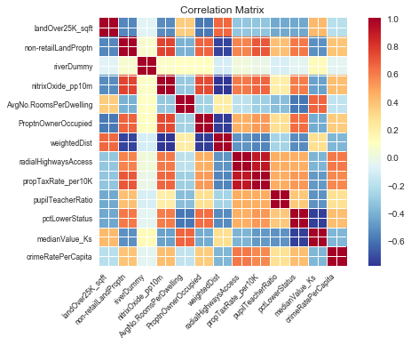
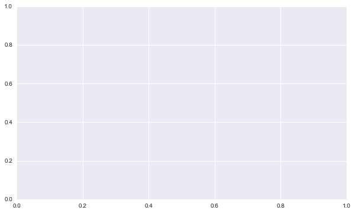

#regresiones lineales
"""
The first line of the preceding code enables matplotlib to display the graphical output of the code in the notebook environment.
The lines of code that follow use the import keyword to load various Python modules into our programming environment.
The last statement is used to set the aesthetic look of the graphs that matplotlib generates to the type displayed by the seaborn module.
"""
%matplotlib inline
import matplotlib as mpl
import seaborn as sns
import matplotlib.pyplot as plt
import statsmodels.formula.api as smf
import statsmodels.graphics.api as smg
import pandas as pd
import numpy as np
import patsy
from statsmodels.graphics.correlation import plot_corr
from sklearn.model_selection import train_test_split
plt.style.use('seaborn')
rawBostonData = pd.read_csv('https://raw.githubusercontent.com/PacktWorkshops/The-Data-Science-Workshop/master/Chapter02/Dataset/Boston.csv')
rawBostonData.head()
| CRIM | ZN | INDUS | CHAS | NOX | RM | AGE | DIS | RAD | TAX | PTRATIO | LSTAT | MEDV | |
|---|---|---|---|---|---|---|---|---|---|---|---|---|---|
| 0 | 0.00632 | 18.0 | 2.31 | 0 | 0.538 | 6.575 | 65.2 | 4.0900 | 1 | 296 | 15.3 | 4.98 | 24.0 |
| 1 | 0.02731 | 0.0 | 7.07 | 0 | 0.469 | 6.421 | 78.9 | 4.9671 | 2 | 242 | 17.8 | 9.14 | 21.6 |
| 2 | 0.02729 | 0.0 | 7.07 | 0 | 0.469 | 7.185 | 61.1 | 4.9671 | 2 | 242 | 17.8 | 4.03 | 34.7 |
| 3 | 0.03237 | 0.0 | 2.18 | 0 | 0.458 | 6.998 | 45.8 | 6.0622 | 3 | 222 | 18.7 | 2.94 | 33.4 |
| 4 | 0.06905 | 0.0 | 2.18 | 0 | 0.458 | 7.147 | 54.2 | 6.0622 | 3 | 222 | 18.7 | 5.33 | 36.2 |
#limpiamos los valores nulos
rawBostonData = rawBostonData.dropna()
#limpiamos duplicados
rawBostonData = rawBostonData.dropna()
list(rawBostonData.columns)
['CRIM',
' ZN ',
'INDUS ',
'CHAS',
'NOX',
'RM',
'AGE',
'DIS',
'RAD',
'TAX',
'PTRATIO',
'LSTAT',
'MEDV']
renamedBostonData = rawBostonData.rename(columns = {'CRIM':'crimeRatePerCapita',
' ZN ':'landOver25K_sqft',
'INDUS ':'non-retailLandProptn',
'CHAS':'riverDummy',
'NOX':'nitrixOxide_pp10m',
'RM':'AvgNo.RoomsPerDwelling',
'AGE':'ProptnOwnerOccupied',
'DIS':'weightedDist',
'RAD':'radialHighwaysAccess',
'TAX':'propTaxRate_per10K',
'PTRATIO':'pupilTeacherRatio',
'LSTAT':'pctLowerStatus',
'MEDV':'medianValue_Ks'})
renamedBostonData.head()
| crimeRatePerCapita | landOver25K_sqft | non-retailLandProptn | riverDummy | nitrixOxide_pp10m | AvgNo.RoomsPerDwelling | ProptnOwnerOccupied | weightedDist | radialHighwaysAccess | propTaxRate_per10K | pupilTeacherRatio | pctLowerStatus | medianValue_Ks | |
|---|---|---|---|---|---|---|---|---|---|---|---|---|---|
| 0 | 0.00632 | 18.0 | 2.31 | 0 | 0.538 | 6.575 | 65.2 | 4.0900 | 1 | 296 | 15.3 | 4.98 | 24.0 |
| 1 | 0.02731 | 0.0 | 7.07 | 0 | 0.469 | 6.421 | 78.9 | 4.9671 | 2 | 242 | 17.8 | 9.14 | 21.6 |
| 2 | 0.02729 | 0.0 | 7.07 | 0 | 0.469 | 7.185 | 61.1 | 4.9671 | 2 | 242 | 17.8 | 4.03 | 34.7 |
| 3 | 0.03237 | 0.0 | 2.18 | 0 | 0.458 | 6.998 | 45.8 | 6.0622 | 3 | 222 | 18.7 | 2.94 | 33.4 |
| 4 | 0.06905 | 0.0 | 2.18 | 0 | 0.458 | 7.147 | 54.2 | 6.0622 | 3 | 222 | 18.7 | 5.33 | 36.2 |
renamedBostonData.info()
<class 'pandas.core.frame.DataFrame'>
Int64Index: 506 entries, 0 to 505
Data columns (total 13 columns):
# Column Non-Null Count Dtype
--- ------ -------------- -----
0 crimeRatePerCapita 506 non-null float64
1 landOver25K_sqft 506 non-null float64
2 non-retailLandProptn 506 non-null float64
3 riverDummy 506 non-null int64
4 nitrixOxide_pp10m 506 non-null float64
5 AvgNo.RoomsPerDwelling 506 non-null float64
6 ProptnOwnerOccupied 506 non-null float64
7 weightedDist 506 non-null float64
8 radialHighwaysAccess 506 non-null int64
9 propTaxRate_per10K 506 non-null int64
10 pupilTeacherRatio 506 non-null float64
11 pctLowerStatus 506 non-null float64
12 medianValue_Ks 506 non-null float64
dtypes: float64(10), int64(3)
memory usage: 55.3 KB
#calculamos estadisticas basicas
"""
We used the pandas function, describe, called on the DataFrame to calculate simple statistics for numeric fields (this includes any field with a numpy number
in the DataFrame. The statistics include the minimum, the maximum, the count of rows in each column, the average of each column (mean), the 25th percentile,
the 50th percentile, and the 75th percentile. We transpose (using the .T function) the output of the describe function to get a better layout.
"""
renamedBostonData.describe(include=[np.number]).T
| count | mean | std | min | 25% | 50% | 75% | max | |
|---|---|---|---|---|---|---|---|---|
| crimeRatePerCapita | 506.0 | 3.613524 | 8.601545 | 0.00632 | 0.082045 | 0.25651 | 3.677082 | 88.9762 |
| landOver25K_sqft | 506.0 | 11.363636 | 23.322453 | 0.00000 | 0.000000 | 0.00000 | 12.500000 | 100.0000 |
| non-retailLandProptn | 506.0 | 11.136779 | 6.860353 | 0.46000 | 5.190000 | 9.69000 | 18.100000 | 27.7400 |
| riverDummy | 506.0 | 0.069170 | 0.253994 | 0.00000 | 0.000000 | 0.00000 | 0.000000 | 1.0000 |
| nitrixOxide_pp10m | 506.0 | 0.554695 | 0.115878 | 0.38500 | 0.449000 | 0.53800 | 0.624000 | 0.8710 |
| AvgNo.RoomsPerDwelling | 506.0 | 6.284634 | 0.702617 | 3.56100 | 5.885500 | 6.20850 | 6.623500 | 8.7800 |
| ProptnOwnerOccupied | 506.0 | 68.574901 | 28.148861 | 2.90000 | 45.025000 | 77.50000 | 94.075000 | 100.0000 |
| weightedDist | 506.0 | 3.795043 | 2.105710 | 1.12960 | 2.100175 | 3.20745 | 5.188425 | 12.1265 |
| radialHighwaysAccess | 506.0 | 9.549407 | 8.707259 | 1.00000 | 4.000000 | 5.00000 | 24.000000 | 24.0000 |
| propTaxRate_per10K | 506.0 | 408.237154 | 168.537116 | 187.00000 | 279.000000 | 330.00000 | 666.000000 | 711.0000 |
| pupilTeacherRatio | 506.0 | 18.455534 | 2.164946 | 12.60000 | 17.400000 | 19.05000 | 20.200000 | 22.0000 |
| pctLowerStatus | 506.0 | 12.653063 | 7.141062 | 1.73000 | 6.950000 | 11.36000 | 16.955000 | 37.9700 |
| medianValue_Ks | 506.0 | 22.532806 | 9.197104 | 5.00000 | 17.025000 | 21.20000 | 25.000000 | 50.0000 |
#Divide the DataFrame into training and test sets,
"""
We choose a test data size of 30%, which is 0.3. The train_test_split function is used to achieve this. We set the seed of the random number generator
so that we can obtain a reproducible split each time we run this code. An arbitrary value of 10 is used here.
It is good model-building practice to divide a dataset being used to develop a model into at least two parts.
One part is used to develop the model and it is called a training set (X_train and y_train combined).
"""
X = renamedBostonData.drop('crimeRatePerCapita', axis = 1)
y = renamedBostonData[['crimeRatePerCapita']]
seed = 10
test_data_size = 0.3
X_train, X_test, y_train, y_test = train_test_split(X, y, test_size = test_data_size, random_state = seed)
train_data = pd.concat([X_train, y_train], axis = 1)
test_data = pd.concat([X_test, y_test], axis = 1)
#Calculate and plot a correlation matrix for the train_data set
#el backslash es para continuar la linea en el renglon siguiente
corrMatrix = train_data.corr(method = 'pearson')
xnames=list(train_data.columns)
ynames=list(train_data.columns)
plot_corr(corrMatrix, xnames=xnames, ynames=ynames,\
title=None, normcolor=False, cmap='RdYlBu_r')

"""
In the preceding heatmap, we can see that there is a strong positive correlation (an increase in one causes an increase in the other)
between variables that have orange or red squares.
There is a strong negative correlation (an increase in one causes a decrease in the other) between variables with blue squares.
There is little or no correlation between variables with pale-colored squares.
"""
'\nIn the preceding heatmap, we can see that there is a strong positive correlation (an increase in one causes an increase in the other) \nbetween variables that have orange or red squares. \nThere is a strong negative correlation (an increase in one causes a decrease in the other) between variables with blue squares. \nThere is little or no correlation between variables with pale-colored squares.\n'
train_data.corr (method = 'pearson')
| landOver25K_sqft | non-retailLandProptn | riverDummy | nitrixOxide_pp10m | AvgNo.RoomsPerDwelling | ProptnOwnerOccupied | weightedDist | radialHighwaysAccess | propTaxRate_per10K | pupilTeacherRatio | pctLowerStatus | medianValue_Ks | crimeRatePerCapita | |
|---|---|---|---|---|---|---|---|---|---|---|---|---|---|
| landOver25K_sqft | 1.000000 | -0.540095 | -0.059189 | -0.520305 | 0.355346 | -0.577457 | 0.659340 | -0.311920 | -0.324172 | -0.424612 | -0.435827 | 0.422574 | -0.198455 |
| non-retailLandProptn | -0.540095 | 1.000000 | 0.065271 | 0.758178 | -0.399166 | 0.667887 | -0.728968 | 0.580813 | 0.702973 | 0.398513 | 0.607457 | -0.508338 | 0.387471 |
| riverDummy | -0.059189 | 0.065271 | 1.000000 | 0.091469 | 0.107996 | 0.106329 | -0.098551 | 0.022731 | -0.007864 | -0.094255 | -0.041110 | 0.136831 | -0.044587 |
| nitrixOxide_pp10m | -0.520305 | 0.758178 | 0.091469 | 1.000000 | -0.306510 | 0.742016 | -0.776311 | 0.606721 | 0.662164 | 0.206809 | 0.603656 | -0.453424 | 0.405813 |
| AvgNo.RoomsPerDwelling | 0.355346 | -0.399166 | 0.107996 | -0.306510 | 1.000000 | -0.263085 | 0.215439 | -0.183000 | -0.280341 | -0.350828 | -0.586573 | 0.666761 | -0.167258 |
| ProptnOwnerOccupied | -0.577457 | 0.667887 | 0.106329 | 0.742016 | -0.263085 | 1.000000 | -0.751059 | 0.458717 | 0.515376 | 0.289976 | 0.639881 | -0.419062 | 0.355730 |
| weightedDist | 0.659340 | -0.728968 | -0.098551 | -0.776311 | 0.215439 | -0.751059 | 1.000000 | -0.494932 | -0.543333 | -0.259140 | -0.522120 | 0.289658 | -0.378997 |
| radialHighwaysAccess | -0.311920 | 0.580813 | 0.022731 | 0.606721 | -0.183000 | 0.458717 | -0.494932 | 1.000000 | 0.908578 | 0.462290 | 0.456592 | -0.383132 | 0.608838 |
| propTaxRate_per10K | -0.324172 | 0.702973 | -0.007864 | 0.662164 | -0.280341 | 0.515376 | -0.543333 | 0.908578 | 1.000000 | 0.462556 | 0.528029 | -0.478903 | 0.565035 |
| pupilTeacherRatio | -0.424612 | 0.398513 | -0.094255 | 0.206809 | -0.350828 | 0.289976 | -0.259140 | 0.462290 | 0.462556 | 1.000000 | 0.374842 | -0.503692 | 0.276530 |
| pctLowerStatus | -0.435827 | 0.607457 | -0.041110 | 0.603656 | -0.586573 | 0.639881 | -0.522120 | 0.456592 | 0.528029 | 0.374842 | 1.000000 | -0.743548 | 0.406340 |
| medianValue_Ks | 0.422574 | -0.508338 | 0.136831 | -0.453424 | 0.666761 | -0.419062 | 0.289658 | -0.383132 | -0.478903 | -0.503692 | -0.743548 | 1.000000 | -0.378949 |
| crimeRatePerCapita | -0.198455 | 0.387471 | -0.044587 | 0.405813 | -0.167258 | 0.355730 | -0.378997 | 0.608838 | 0.565035 | 0.276530 | 0.406340 | -0.378949 | 1.000000 |
#usando Scatter graphs
"""
Use the subplots function in matplotlib to define a canvas (assigned the variable name fig in the following code) and a graph object (assigned the variable
name ax in the following code) in Python.
You can set the size of the graph by setting the figsize (width = 10, height = 6) argument of the function
Use the seaborn function regplot to create the scatter plot
The function accepts arguments for the independent variable (x), the dependent variable (y), the confidence interval of the regression parameters (ci),
which takes values from 0 to 100, the DataFrame that has x and y (data), a matplotlib graph object (ax), and others to control the aesthetics of the
points on the graph. (In this case, the confidence interval is set to None
"""
fig, ax = plt.subplots(figsize=(10, 6))
fig.tight_layout()
ax.set_ylabel('Crime rate per Capita', fontsize=15, fontname='DejaVu Sans')
ax.set_xlabel("Median value of owner-occupied homes in $1000's", fontsize=15, fontname='DejaVu Sans')
ax.set_xlim(left=None, right=55)
ax.set_ylim(bottom=-10, top=30)
ax.tick_params(axis='both', which='major', labelsize=12)
sns.regplot(x='medianValue_Ks', y='crimeRatePerCapita', ci=None, data=train_data, ax=ax, color='k', scatter_kws={"s": 20,"color": "royalblue", "alpha":1})
<matplotlib.axes._subplots.AxesSubplot at 0x21ff3ed4c88>
fig, ax = plt.subplots(figsize=(10, 6))
